Image Captioning Final Project
In this final project you will define and train an image-to-caption model, that can produce descriptions for real world images!
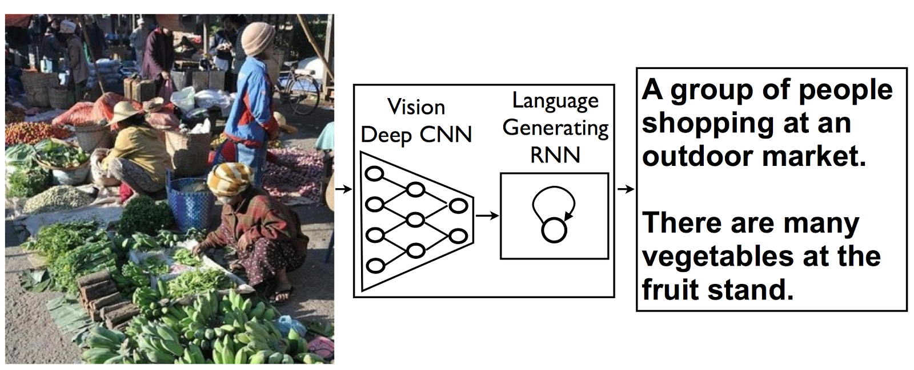
Model architecture: CNN encoder and RNN decoder.
(https://research.googleblog.com/2014/11/a-picture-is-worth-thousand-coherent.html)
Import stuff
1 | import sys |
1 | download_utils.link_all_keras_resources() |
1 | import tensorflow as tf |
Using TensorFlow backend.
Prepare the storage for model checkpoints
1 | # Leave USE_GOOGLE_DRIVE = False if you're running locally! |
/root/intro-to-dl/week6/weights_10
Fill in your Coursera token and email
To successfully submit your answers to our grader, please fill in your Coursera submission token and email
1 | grader = grading.Grader(assignment_key="NEDBg6CgEee8nQ6uE8a7OA", |
1 | # token expires every 30 min |
Download data
Takes 10 hours and 20 GB. We’ve downloaded necessary files for you.
Relevant links (just in case):
- train images http://msvocds.blob.core.windows.net/coco2014/train2014.zip
- validation images http://msvocds.blob.core.windows.net/coco2014/val2014.zip
- captions for both train and validation http://msvocds.blob.core.windows.net/annotations-1-0-3/captions_train-val2014.zip
1 | # we downloaded them for you, just link them here |
Extract image features
We will use pre-trained InceptionV3 model for CNN encoder (https://research.googleblog.com/2016/03/train-your-own-image-classifier-with.html) and extract its last hidden layer as an embedding:
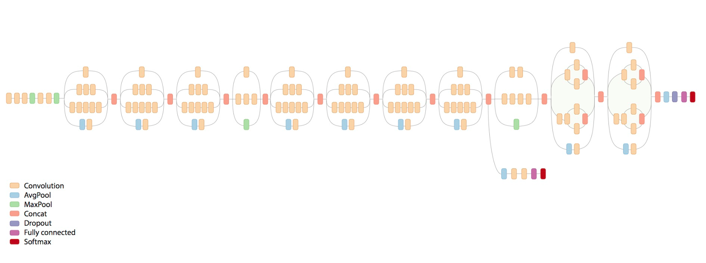
1 | IMG_SIZE = 299 |
1 | # we take the last hidden layer of IncetionV3 as an image embedding |
Features extraction takes too much time on CPU:
- Takes 16 minutes on GPU.
- 25x slower (InceptionV3) on CPU and takes 7 hours.
- 10x slower (MobileNet) on CPU and takes 3 hours.
So we’ve done it for you with the following code:1
2
3
4
5
6
7
8
9
10
11
12
13
14
15
16
17
18
19
20
21
22
23
24
25
26# load pre-trained model
reset_tf_session()
encoder, preprocess_for_model = get_cnn_encoder()
# extract train features
train_img_embeds, train_img_fns = utils.apply_model(
"train2014.zip", encoder, preprocess_for_model, input_shape=(IMG_SIZE, IMG_SIZE))
utils.save_pickle(train_img_embeds, "train_img_embeds.pickle")
utils.save_pickle(train_img_fns, "train_img_fns.pickle")
# extract validation features
val_img_embeds, val_img_fns = utils.apply_model(
"val2014.zip", encoder, preprocess_for_model, input_shape=(IMG_SIZE, IMG_SIZE))
utils.save_pickle(val_img_embeds, "val_img_embeds.pickle")
utils.save_pickle(val_img_fns, "val_img_fns.pickle")
# sample images for learners
def sample_zip(fn_in, fn_out, rate=0.01, seed=42):
np.random.seed(seed)
with zipfile.ZipFile(fn_in) as fin, zipfile.ZipFile(fn_out, "w") as fout:
sampled = filter(lambda _: np.random.rand() < rate, fin.filelist)
for zInfo in sampled:
fout.writestr(zInfo, fin.read(zInfo))
sample_zip("train2014.zip", "train2014_sample.zip")
sample_zip("val2014.zip", "val2014_sample.zip")
1 | # load prepared embeddings |
(82783, 2048) 82783
(40504, 2048) 40504
1 | # check prepared samples of images |
['val2014_sample.zip', 'train2014_sample.zip']
Extract captions for images
1 | # extract captions from zip |
82783 82783
40504 40504
1 | # look at training example (each has 5 captions) |
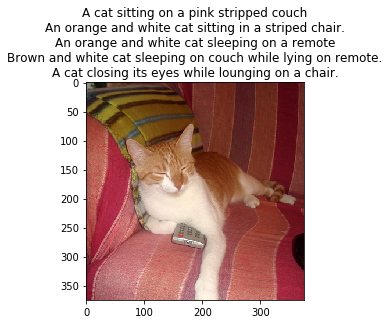
Prepare captions for training
1 | # preview captions data |
[['A long dirt road going through a forest.',
'A SCENE OF WATER AND A PATH WAY',
'A sandy path surrounded by trees leads to a beach.',
'Ocean view through a dirt road surrounded by a forested area. ',
'dirt path leading beneath barren trees to open plains'],
['A group of zebra standing next to each other.',
'This is an image of of zebras drinking',
'ZEBRAS AND BIRDS SHARING THE SAME WATERING HOLE',
'Zebras that are bent over and drinking water together.',
'a number of zebras drinking water near one another']]
1 | from functools import reduce |
1 | # special tokens |
1 | # prepare vocabulary |
8769
1 | # replace tokens with indices |
Captions have different length, but we need to batch them, that’s why we will add PAD tokens so that all sentences have an equal length.
We will crunch LSTM through all the tokens, but we will ignore padding tokens during loss calculation.
1 | # we will use this during training |
1 | ## GRADED PART, DO NOT CHANGE! |
1 | # you can make submission with answers so far to check yourself at this stage |
Submitted to Coursera platform. See results on assignment page!
1 | # make sure you use correct argument in caption_tokens_to_indices |
Training
Define architecture
Since our problem is to generate image captions, RNN text generator should be conditioned on image. The idea is to use image features as an initial state for RNN instead of zeros.
Remember that you should transform image feature vector to RNN hidden state size by fully-connected layer and then pass it to RNN.
During training we will feed ground truth tokens into the lstm to get predictions of next tokens.
Notice that we don’t need to feed last token (END) as input (http://cs.stanford.edu/people/karpathy/):
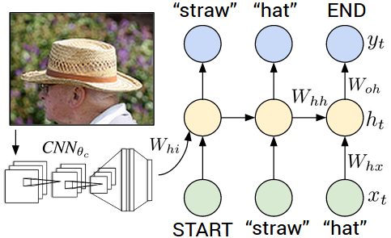
1 | IMG_EMBED_SIZE = train_img_embeds.shape[1] |
1 | IMG_EMBED_SIZE,pad_idx,LOGIT_BOTTLENECK |
(2048, 1, 120)
1 | # remember to reset your graph if you want to start building it from scratch! |
Here we define decoder graph.
We use Keras layers where possible because we can use them in functional style with weights reuse like this:1
2
3
4
5dense_layer = L.Dense(42, input_shape=(None, 100) activation='relu')
a = tf.placeholder('float32', [None, 100])
b = tf.placeholder('float32', [None, 100])
dense_layer(a) # that's how we applied dense layer!
dense_layer(b) # and again
Here’s a figure to help you with flattening in decoder:
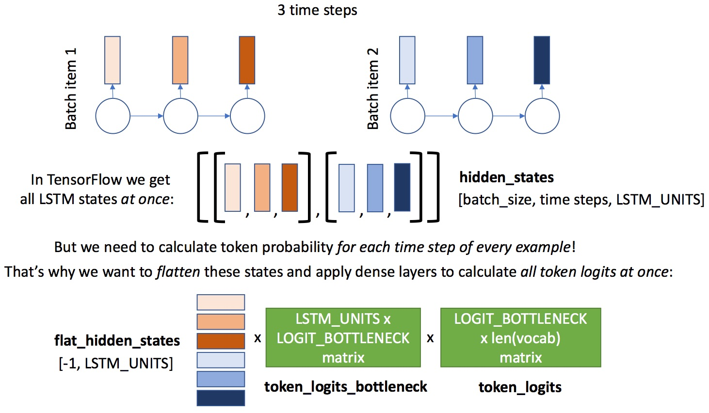
1 | class decoder: |
1 | # define optimizer operation to minimize the loss |
/usr/local/lib/python3.5/dist-packages/tensorflow/python/ops/gradients_impl.py:93: UserWarning: Converting sparse IndexedSlices to a dense Tensor of unknown shape. This may consume a large amount of memory.
"Converting sparse IndexedSlices to a dense Tensor of unknown shape. "
1 | ## GRADED PART, DO NOT CHANGE! |
1 | # you can make submission with answers so far to check yourself at this stage |
Submitted to Coursera platform. See results on assignment page!
Training loop
Evaluate train and validation metrics through training and log them. Ensure that loss decreases.
1 | train_captions_indexed = np.array(train_captions_indexed) |
1 | # generate batch via random sampling of images and captions for them, |
1 | batch_size = 64 |
1 | # you can load trained weights here |
Look at the training and validation loss, they should be decreasing!
1 | train_img_embeds.shape,train_captions_indexed.shape |
((82783, 2048), (82783,))
1 | # actual training loop |
HBox(children=(IntProgress(value=0, max=1000), HTML(value='')))
Epoch: 0, train loss: 3.0007614777088167, val loss: 2.9724034023284913
HBox(children=(IntProgress(value=0, max=1000), HTML(value='')))
Epoch: 1, train loss: 2.8531791372299193, val loss: 2.9006982970237734
HBox(children=(IntProgress(value=0, max=1000), HTML(value='')))
Epoch: 2, train loss: 2.7954050121307374, val loss: 2.8111998438835144
HBox(children=(IntProgress(value=0, max=1000), HTML(value='')))
Epoch: 3, train loss: 2.730731366157532, val loss: 2.750483591556549
HBox(children=(IntProgress(value=0, max=1000), HTML(value='')))
Epoch: 4, train loss: 2.6690069699287413, val loss: 2.749560286998749
HBox(children=(IntProgress(value=0, max=1000), HTML(value='')))
Epoch: 5, train loss: 2.633123325586319, val loss: 2.7148624300956725
HBox(children=(IntProgress(value=0, max=1000), HTML(value='')))
Epoch: 6, train loss: 2.5939396080970765, val loss: 2.6811715364456177
HBox(children=(IntProgress(value=0, max=1000), HTML(value='')))
Epoch: 7, train loss: 2.574599018335342, val loss: 2.6403690791130066
HBox(children=(IntProgress(value=0, max=1000), HTML(value='')))
Epoch: 8, train loss: 2.546513616323471, val loss: 2.627152864933014
HBox(children=(IntProgress(value=0, max=1000), HTML(value='')))
Epoch: 9, train loss: 2.5285718023777006, val loss: 2.6443107414245604
HBox(children=(IntProgress(value=0, max=1000), HTML(value='')))
Epoch: 10, train loss: 2.4949201991558074, val loss: 2.6084690499305725
HBox(children=(IntProgress(value=0, max=1000), HTML(value='')))
Epoch: 11, train loss: 2.478545124053955, val loss: 2.594680278301239
Finished!
1 | ## GRADED PART, DO NOT CHANGE! |
HBox(children=(IntProgress(value=0, max=1000), HTML(value='')))
1 | # you can make submission with answers so far to check yourself at this stage |
Submitted to Coursera platform. See results on assignment page!
1 | # check that it's learnt something, outputs accuracy of next word prediction (should be around 0.5) |
Loss: 2.37412
Accuracy: 0.501388888889
Example 0
Predicted: a person flying flying a kite in a building of people #END# #END# #END# #END# #END# #END# #END# #END# #END# #END#
Truth: a child is flying a kite near a group of buildings #END# #PAD# #PAD# #PAD# #PAD# #PAD# #PAD# #PAD# #PAD# #PAD#
Example 1
Predicted: a person of a doing a skateboard in down ramp of a ramp #END# #END# #END# #END# #END# #END# #END# #END#
Truth: a closeup of someone on a skateboard riding the edge of a ramp #END# #PAD# #PAD# #PAD# #PAD# #PAD# #PAD# #PAD#
Example 2
Predicted: a bed with a bed and a on furniture #END# a wall #END# #END# #END# #END# #END# #END# #END# #END# #END#
Truth: a bedroom with aqua walls and cutouts of rain on the wall #END# #PAD# #PAD# #PAD# #PAD# #PAD# #PAD# #PAD# #PAD#
1 | # save last graph weights to file! |
'/root/intro-to-dl/week6/weights'
Applying model
Here we construct a graph for our final model.
It will work as follows:
- take an image as an input and embed it
- condition lstm on that embedding
- predict the next token given a START input token
- use predicted token as an input at next time step
- iterate until you predict an END token
1 | class final_model: |
INFO:tensorflow:Restoring parameters from /root/intro-to-dl/week6/weights
1 | # look at how temperature works for probability distributions |
0.999999999796 2.03703597592e-10 1.26765059997e-70 with temperature 0.01
0.903037043325 0.0969628642039 9.24709932365e-08 with temperature 0.1
0.5 0.4 0.1 with temperature 1
0.353447726392 0.345648113606 0.300904160002 with temperature 10
0.335367280481 0.334619764349 0.33001295517 with temperature 100
1 | # this is an actual prediction loop |
1 | # look at validation prediction example |
a baseball player is swinging his bat at a ball
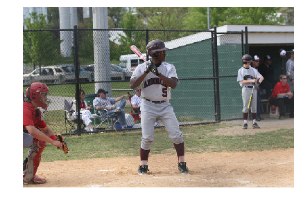
1 | # sample more images from validation |
a bear is sitting on a rock in the water
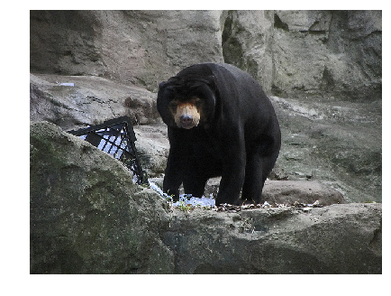
a train is parked on the tracks near a fence
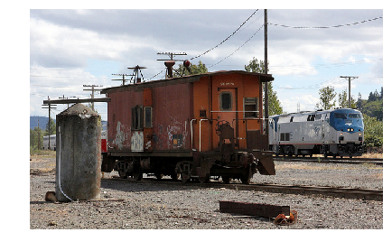
a group of people standing around a man in a room
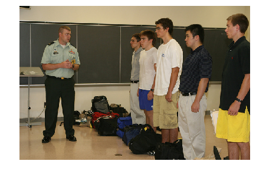
a young boy in a red shirt and a white shirt and a white shirt and a white shirt
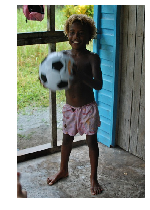
a city with many boats and a building
a baseball player is swinging at a ball
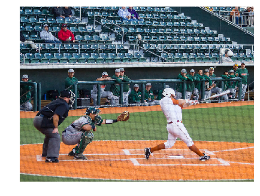
a baby elephant standing in a field with a tree in the background
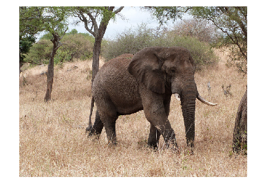
a group of cars driving down a street
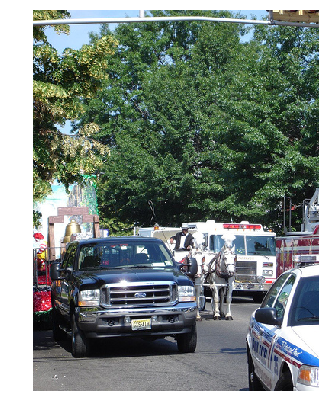
a bus is driving down the street with a bus
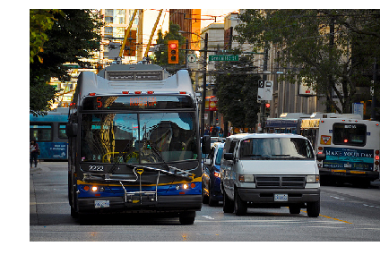
a woman sitting at a table with a laptop
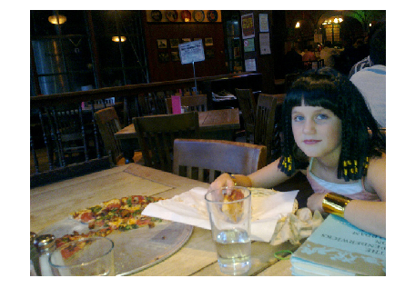
You can download any image from the Internet and appply your model to it!
1 | download_utils.download_file( |
HBox(children=(IntProgress(value=0, max=21799), HTML(value='')))
a man holding a cell phone in front of a store
1 | download_utils.download_file( |
HBox(children=(IntProgress(value=0, max=23592), HTML(value='')))
a man holding a pair of scissors in a store
1 | download_utils.download_file( |
HBox(children=(IntProgress(value=0, max=31865), HTML(value='')))
a person holding a kite in a parking lot
1 | download_utils.download_file( |
HBox(children=(IntProgress(value=0, max=56360), HTML(value='')))
a man in a white shirt and a white shirt and a white shirt and a white shirt
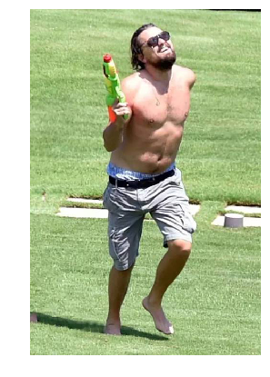
1 | download_utils.download_file( |
HBox(children=(IntProgress(value=0, max=20262), HTML(value='')))
a man in a suit and tie standing in front of a microphone
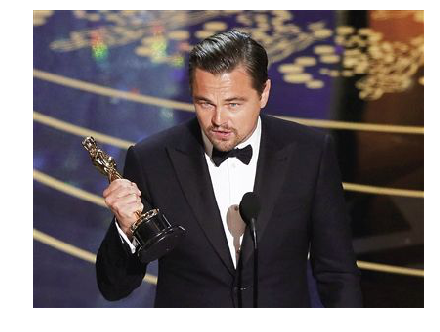
1 | download_utils.download_file( |
HBox(children=(IntProgress(value=0, max=24164), HTML(value='')))
a man in a white shirt and tie standing next to a man
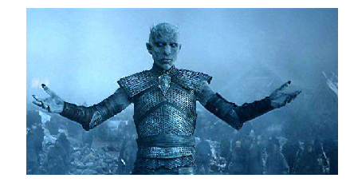
1 | download_utils.download_file( |
HBox(children=(IntProgress(value=0, max=29384), HTML(value='')))
a giraffe is eating from a white plate
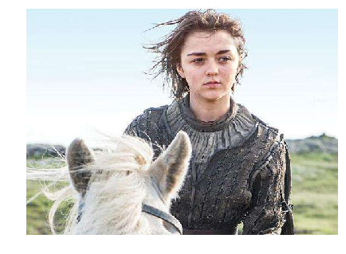
1 | download_utils.download_file( |
HBox(children=(IntProgress(value=0, max=97353), HTML(value='')))
a man is standing next to a statue of a statue
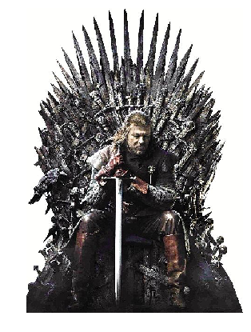
1 | download_utils.download_file( |
HBox(children=(IntProgress(value=0, max=18206), HTML(value='')))
a woman in a black jacket and a woman standing next to a woman
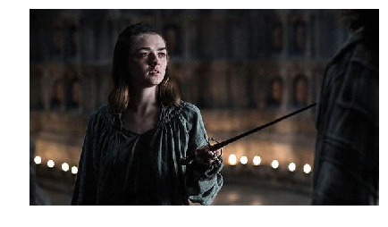
1 | download_utils.download_file( |
HBox(children=(IntProgress(value=0, max=40295), HTML(value='')))
a man and woman standing in a field with a kite
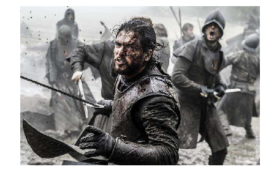
1 | download_utils.download_file( |
HBox(children=(IntProgress(value=0, max=33113), HTML(value='')))
a man in a suit and tie standing in front of a building
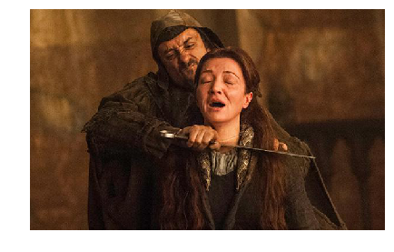
Now it’s time to find 10 examples where your model works good and 10 examples where it fails!
You can use images from validation set as follows:1
show_valid_example(val_img_fns, example_idx=...)
You can use images from the Internet as follows:1
2! wget ...
apply_model_to_image_raw_bytes(open("...", "rb").read())
If you use these functions, the output will be embedded into your notebook and will be visible during peer review!
When you’re done, download your noteboook using “File” -> “Download as” -> “Notebook” and prepare that file for peer review!
1 | ### YOUR EXAMPLES HERE ### |
That’s it!
Congratulations, you’ve trained your image captioning model and now can produce captions for any picture from the Internet!